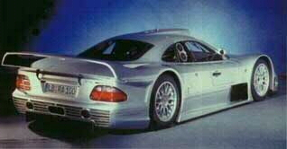
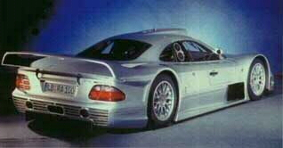

Mercedes Benz CLK-GTR
 

Specs
Price |
$1,000,000(est.) |
Top Speed |
191mph+ |
Acceleration |
|
Engine |
|
0-30mph |
N/A |
Type |
V12, 48 valve Quad cam |
0-60mph |
3.4sec |
Displacement |
6.0L |
0-100 |
5.4sec (!!) |
Power |
560hp@7000rpm |
1/4 mile |
N/A |
Torque |
530 lbs-ft@5300rpm? |
Weight |
2205 lb |
Handling |
|
Gas mileage |
|
Skidpad |
N/A |
City |
N/A |
600ft slalom |
N/A |
Highway |
N/A |
Powertrain |
Mid engined, rear wheel drive, 6 speed manual |
(? = incomplete data or unverified info, N/A = info Not Available)
Beyond the specs:
In a relatively short period of time, Mercedes was able to put together this gem of a machine, which could compete head to head with the Porsche 911 GT-1 for the full 24-hour length of the race. This Le Mans racecar may not have a very good 0-60 time but it gets to 100mph just as fast as the Chrysler Viper GTS-R. This car uses a tuned and enlarged version of the highly refined V12 found in many Mercedes road cars including the Mercedes flagship vehicle the S class. This is another marvel of Mercedes engineering, I just wonder when (if ever) will BMW enter the GT1 class to challenge Mercedes.
~Oracle